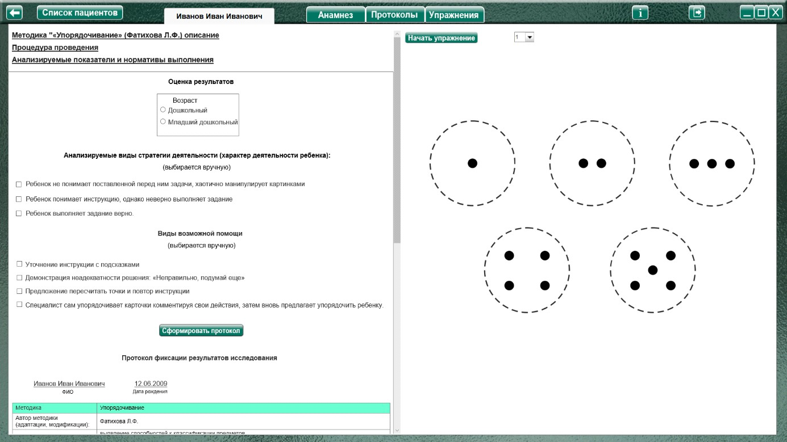
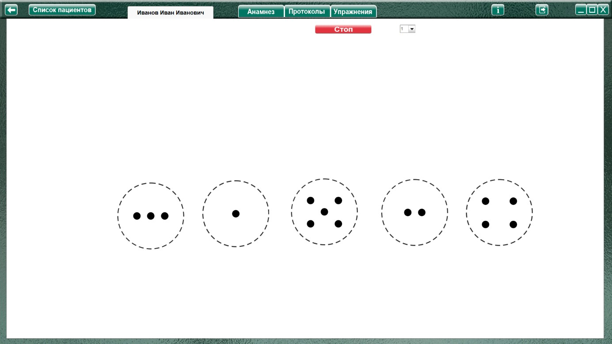

Методика «Упорядочивание» (Фатихова Л.Ф.)
Методика «Упорядочивание» (Фатихова Л.Ф.) описание
Процедура проведения.
Исследование состоит из трех серий. Экспериментатор в беспорядке располагает круги перед ребенком и дает инструкцию: «Внимательно рассмотри эти круги. В одних кругах точек мало, в
других много. Сейчас круги расположены в беспорядке. Подумай и разложи эти круги в ряд по порядку. Когда будешь искать тот или иной порядок, не забывай, что на кругах есть точки».
При успешном выполнении действия упорядочивания в прямом порядке можно предложить ребенку упорядочить совокупности в обратном порядке.
Вторая и третья серия проводятся аналогично первой, однако первичная инструкция несколько сокращается: «А теперь расположи по порядку эти карточки».
Если ребенок вновь затрудняется с выполнением задания, ему предлагаются те же виды помощи, что и в первой серии. Если ребенок не принимает задачу, первый вид помощи опускается и
экспериментатор сразу переходит ко второму ее виду, однако оценка за этот вид помощи все равно снижается.
Анализируемые показатели и нормативы выполнения
Безошибочное выполнении каждой серии задания оценивается в 3 балла. Каждый вид помощи уменьшает результат оценивания серии на 0,5 балла. Затем баллы по всем трем сериям суммируются. Таким образом, максимальная оценка за выполнение задания без ошибок и
использования помощи составляет 9 баллов.
Оценка результатов
Группы детей |
Возраст |
Баллы |
Нормально развивающиеся дети. |
Дошкольный |
6-9 |
Младший школьный |
8-9 |
|
Дети с задержкой психического развития. |
Дошкольный |
3-7 |
Младший школьный |
5-8 |
|
Дети с умственной отсталостью. |
Дошкольный |
0-5 |
Младший школьный |
1-7 |
Нормально развивающиеся дети дошкольного возраста не испытывают трудности при выполнении заданий в случае знакомства с действием количественного счета в пределах 5. При выполнении задания они упорядочивают круги на основе произведенного пересчета точек на них или на основе зрительного восприятия совокупностей, без пересчета.
Младшие школьники данной категории не нуждаются в пересчете для упорядочивания кругов, т.е. они выполняют задание на основе зрительного восприятия количественных совокупностей. Нормально развивающиеся дети способны к упорядочиваю количественных совокупностей и в прямом (от 1 до 5), и в обратном (от 5 до 1) порядке.
Дети с ЗПР используют усвоенное при выполнении предыдущей серии действие на задание следующей серии (осуществляют перенос) и могут с большей успешностью выполнять задание последующей серии в сравнении с заданием предыдущей серии. Дошкольники с ЗПР могут допускать ошибки в дифференциации совокупностей 4 и 5. И дошкольники, и младшие
школьники нуждаются в стимулирующей (второй вид) и направляющей (третий вид) помощи при выполнении задания и могут с помощью упорядочить совокупности в обратном порядке.
Дети с умственной отсталостью в дошкольном возрасте в связи с интеллектуальной недостаточностью и речевым недоразвитием могут не понимать задачи и нуждаются в уточнении
инструкции, включения в нее жестов (первый вид помощи). Как правило, второй и третий виды помощи не приводят к успеху действия упорядочивания, часть дошкольников выполняют задание
при предъявлении обучающей помощи (четвертый вид). Уровень выполнения задания у младших школьников выше, чем у дошкольников, что связано как с большей доступностью младшим
школьникам вербализованных заданий, так и с тем, что в школьный период дети активно овладевают количественными представлениями и понятиями. Однако, как дошкольники, так и младшие школьники данной категории не владеют действием переноса и выполняют задание каждой серии как новое, нуждаясь в таких же, а иногда и в больших дозах помощи со стороны взрослого. Также детям данной группы трудно переключиться с упорядочивания в прямом порядке на упорядочивание в обратном порядке.
Виды помощи
Оценка результатов
Характер деятельности ребенка
Виды возможной помощи:
Протокол фиксации результатов исследования
_________________________________ _______________
ФИО Дата рождения
Методика |
Упорядочивание |
|||
Автор методики (адаптации, модификации) |
Фатихова Л.Ф. |
|||
Цель: |
исследование способности ребенка к упорядочиванию предметов по количеству; изучение уровня сформированности действия прямого количественного счета; выявление способности к переносу действия в сходные условия. |
|||
Дата / специалист |
||||
Результат: баллы (макс.) / вывод об уровне развития |
||||
Примечание |
||||
Процесс выполнения диагностического задания |
||||
№ серии |
Характер деятельности ребенка |
Виды помощи |
Баллы |
|
1 |
||||
2 |
||||
3 |
||||
Итоговая оценка |
||||
Логика заполнения протокола
Заполняется автоматически
Результат: баллы (макс.) / – кол-во баллов дублируется из ячейки «Итоговая оценка». (макс. 9).
Ячейки «Характер деятельности ребенка», «Виды помощи» заполняются в зависимости от выбора специалистом соответствующих пунктов в разделе «Оценка результатов» либо самостоятельно.
Итоговая оценка – сумма баллов за все упражнения. Заполняется после формирования протокола по всем выполненным заданиям по нажатию кнопки «Подвести итог».
Остальные ячейки заполняются специалистом самостоятельно. При внесении не целого количества баллов, для разделения целого и десятичного значения использовать запятую. Например: 2,5

Выбрать вариант задания для выполнения и нажать «Начать упражнение» (включая секундомер, закрывая область оценки результата и открывая задание на весь экран).

Выполнить задание согласно пункту «Процедура проведения». Круги располагаются в случайном порядке. Ребенок должен расположить круги в ряд по порядку (путем перемещения мышкой с зажатой левой кнопкой).
Когда специалист нажимает кнопку «Стоп» - открывается поле для оценки результата по 1 заданию. При необходимости выбрать характер деятельности, виды помощи, и нажать кнопку «Сформировать протокол». Произвести оценку результата (заполнить оставшиеся ячейки протокола) согласно пункту «Анализируемые показатели и нормативы выполнения» формируя протокол выполнения 1 задания.
Только после формирования протокола по выполненному заданию можно перейти к продолжению выполнения упражнения!
После формирования протокола нужно выбрать в меню следующее задание и нажать «Начать упражнение»
После формирования протокола по всем выполненным заданиям, нажать кнопку «Подвести итог» под протоколом, чтобы заполнить ячейку «Итоговая оценка».